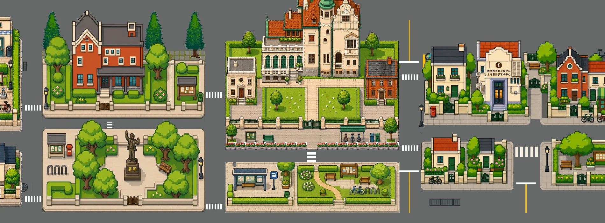

FENG JINGYUE
Visual Design / AIGC / Creative Technology
SHANGHAI · PORTFOLIO 2026AIGC · 材质感、人物与角色氛围01
AIGC · 人物、服饰与插画02
观察光，组织画面，
让想象成为可见的内容。
01 / VISUAL SELECTIONLight, character
Light, character
& imagination.
从场景的明暗，到人物的姿态与服饰，
再到一个完整画面的叙事。
一组关于氛围、构图与视觉表达的 AIGC 探索。
暖色光线 · 场景层次03
氛围、色彩与叙事 · 小幅展示04
人物服饰 · 叙事插画05
明暗关系 · 空间引导06
色彩节奏 · 环形构图07
AIGC宣传海报 · 画面与信息08
含首屏共 8 幅精选，图像来自个人正式作品集 PDF 第 4–7 页，保留内嵌画面完整比例。作品标题为本次网页的展示索引；具体生成及后期分工待补充。
02—04 / SELECTED PRACTICEFrom image
From image
to experience.
图像之外，是筛选、修改、协作和交付。
三个项目，连接视觉内容与真实使用场景。
02 / AIGC图像 / 视觉迭代 / Python
徐汇数字街区AIGC Workflow
Ongoing Project · 持续迭代中
从建筑单体到街区地图。参与 AIGC 图像生产、人工质检与视觉迭代，以 Python 拆分、合并工作流支持素材处理。项目持续迭代中，尚未正式展出或完成最终验收。
查看项目
03 / 交互原型 / 信息呈现 / 后续视频创作
辛追夫人的试衣间Exhibition & further creation
从正式展览的交互与字幕，到后续大艺展延伸创作。两个阶段，分别呈现协作设计与个人视频制作。
查看项目
04 / 角色视觉 / 视频内容 / 自动化探索
豆奶AI Character & Content
一个个人 AI 角色账号的内容探索：形象、视频、横竖屏适配，以及 AI 辅助运营与内容生产的尝试。
查看项目05 / VISUAL FOUNDATIONSMaking, before
Making, before
generating.
形体、材质、光照与手绘构图。
持续积累的美术与 3D 练习，也是视觉判断的基础。
3D场景练习 · 个人作品资料
3D建模练习 · PDF第10页
个人2D插画练习 · PDF第11页
查看角色模型与动态练习 ↗
3D角色练习 · 原始素材“其他/05.png”
视频暂时无法播放。打开视频文件 ↗
本节为视觉基础补充，不作为珠宝设计项目；部分 3D 素材的来源及本人负责环节仍待确认。
06 / ABOUT & CONTACTCuriosity,
Curiosity,
made visual.
冯靖悦
上海大学上海美术学院 · 数字媒体艺术本科
预计 2028 年毕业。
我的实践围绕 AIGC 视觉与图像、视频内容制作展开，也涉及交互原型、3D 与 Unity。我关注一张图的表现力，也关心它如何经过筛选、修改与适配，成为能够被使用的内容。
通过 AI 辅助编程探索自动化工作流。具有美术史学习经历与金工首饰课程体验，希望将对形体、材料与视觉叙事的观察带入更多创意实践。
AIGC视觉图像 / 视频内容Unity / 3DFigmaPhotoshopAfter EffectsAI辅助编程自动化工作流